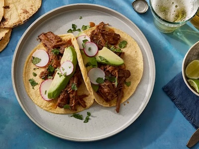

Home
Tacos De Barbacoa

Description
These barbacoa tacos are packed with smoky shredded beef that's perfectly tender. Spices like cumin complement the chiles, while oregano and bay leaves add an earthiness to this recipe.
Ingredients
- 2 ripe plum tomatoes
- 1 small white onion, quartered
- 2 cloves garlic, peeled
- 4 chipotle peppers in adobo sauce
- 3 teaspoons kosher salt
- 1 ½ teaspoons chili powder
- 1 teaspoon ground cumin
- ½ teaspoon freshly ground black pepper
- 1 (3 pound) beef chuck roast, cut into 6-equal sized cubes
- 2 tablespoons olive oil
- 1 cup water
- 1 tablespoon light brown sugar
- 2 teaspoons dried oregano
- 3 fresh bay leaves
- 1 tablespoon lime juice
- corn tortillas, warmed
- 2 ripe avocados, peeled, pitted and sliced
- ½ bunch radishes, thinly sliced
- 2 tablespoons chopped fresh cilantro, or to taste
Steps
- Heat a large cast iron skillet over medium-high. Arrange whole tomatoes, onions (cut-side down), and garlic in the dry skillet in a single layer, working in batches if needed. Cook, turning occasionally, until charred on all sides, about 6 minutes for the garlic and about 12 minutes for the onions and tomatoes.
- Transfer charred vegetables to a blender and add chipotle peppers. Process until smooth, about 1 minute.
- Stir salt, chili powder, cumin, and black pepper together in a small bowl; season beef evenly with salt mixture.
- Heat oil in a Dutch oven over medium-high heat. Add beef in batches and cook, turning occasionally, until browned on all sides, about 3 minutes per side. Transfer browned beef to a large plate.
- Pour water into the Dutch oven and scrape up any browned bits from the bottom of the pan. Stir in onion-tomato mixture, brown sugar, oregano, and bay leaves. Reduce heat to medium-low and bring to a simmer.
- Nestle beef back into pot and cover. Cook, stirring and re-nestling beef occasionally (about every 20 to 30 minutes), until beef is tender and pulls easily apart with a fork, 1 hour and 45 minutes to 2 hours and 15 minutes. Remove bay leaves and discard.
- Remove beef from Dutch oven, place on cutting board; shred beef using 2 forks.
- Return beef to the Dutch oven, add lime juice, and stir to combine.
- To serve, place a few pieces of beef on a warm corn tortilla. Top with avocado, radishes, and cilantro.